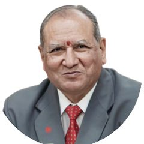
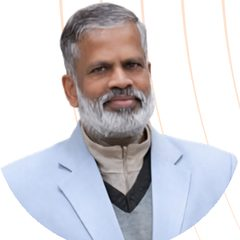
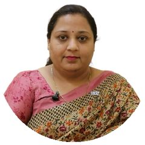
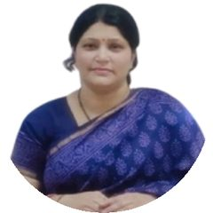
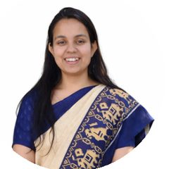

Important dates
Four dates to put in your calendar
- 15 Feb 2027Submission of abstract
- 28 Feb 2027Acceptance of abstract
- 10 Mar 2027Full paper or extended abstract
- 25 Mar 2027Last date of registration
About ISBT
Reimagining organisations for an intelligent, sustainable era
ISBT 2027 reflects the growing need to reimagine organisations in an era driven by intelligent technologies, sustainability and human-centric innovation. As businesses move from Industry 4.0 to Industry 5.0, artificial intelligence, digital transformation, responsible governance and sustainable practices are reshaping how organisations create value, build resilience and contribute to society.
Hosted by ICFAI Business School (IBS), Jaipur, a constituent of The ICFAI University, Jaipur, the conference is an international platform for academicians, researchers, industry leaders, policymakers, entrepreneurs and students.
It aims to foster collaborative research and dialogue that produces innovative solutions for resilient, inclusive and future-ready businesses.
Conference tracks
Eight tracks, one for your paper
Choose the track closest to your work when you submit. The short code becomes part of your paper ID.
Artificial Intelligence, Autonomous Systems and Intelligent Enterprises
- Generative AI, machine learning, intelligent automation and decision intelligence
- AI governance, human–AI collaboration, enterprise intelligence and responsible AI
Other emerging AI-driven technologies and intelligent enterprise solutions are also welcome.
Digital Transformation, Business Analytics and Next-Generation Technologies
- Business analytics, data science, big data, cloud computing and enterprise platforms
- Blockchain, Web 3.0, digital ecosystems and technology-enabled business transformation
Research on emerging digital technologies and innovation-driven transformation is encouraged.
Sustainable Business, ESG and Climate Resilience
- ESG reporting, corporate sustainability, circular economy and responsible governance
- Green innovation, climate strategy, sustainable business models and CSR initiatives
Related research advancing sustainable and responsible business practices may also be submitted.
Future of Work, Human Capital and Organizational Agility
- Talent analytics, digital leadership, organizational culture and workforce transformation
- Employee well-being, diversity, equity and inclusion, and agile organizations
Other contemporary research on people, leadership and organizational transformation is welcome.
Sustainable Finance, FinTech and Corporate Governance
- Sustainable finance, digital banking, green investments and financial innovation
- Corporate governance, enterprise risk management, economic resilience and public policy
All allied topics in finance, economics, governance and financial technologies are invited.
Intelligent Marketing, Consumer Analytics and Digital Engagement
- AI-enabled marketing, consumer analytics, customer experience and omnichannel strategies
- Digital marketing, social media intelligence and sustainable consumer behaviour
Research on emerging marketing technologies and evolving consumer ecosystems is encouraged.
Smart Operations, Industry 5.0 and Intelligent Supply Networks
- Smart manufacturing, Industry 5.0, IoT and digital twin technologies
- Supply chain analytics, resilient logistics and sustainable operations management
Other innovations in operations, manufacturing and intelligent supply chain systems are also welcome.
Innovation Ecosystems, Entrepreneurship and Future Ventures
- Technology entrepreneurship, innovation management, startup financing and venture ecosystems
- Social entrepreneurship, inclusive innovation and sustainable enterprise development
Research on emerging entrepreneurial ecosystems, innovation and future business ventures is also invited.
Submission guidelines
What to send, and in what shape
The conference invites abstracts, extended abstracts and full papers, including empirical, conceptual, theoretical and review papers. All submissions must be original and unpublished.
| Component | Guideline |
|---|---|
| Abstract | 200–250 words outlining the research objective, methodology, key findings, and theoretical and/or managerial implications. |
| Extended abstract | 500–2,000 words, suitable for early-stage research, industry studies and policy-oriented work. Include background, problem statement, objectives, methodology, preliminary findings or propositions, and key contributions. |
| Full paper | 4,000–9,000 words, excluding references and appendices. For empirical, conceptual, theoretical and review papers. Must show originality, methodological rigour, strong theoretical grounding, and clear academic and practical implications. |
| Review papers | Systematic, bibliometric or narrative reviews are welcome. State the review protocol or framework, synthesise existing literature, identify research gaps and outline future research directions. |
| Case study | Practice-oriented or research-based cases on real-world organisational, industry, policy or entrepreneurial contexts. Describe the context, the problem or decision situation, discussion questions where relevant, and managerial or policy implications. Teaching cases should be submitted with teaching notes. |
| Manuscript format | MS Word; Times New Roman, 12-point; 1.5 line spacing; 1-inch (2.5 cm) margins on all sides. |
| Title page | Submitted separately, with the paper title, author names, affiliations, and the corresponding author's email and contact number. Author details must not appear in the main manuscript. |
| Keywords | Maximum of 5 keywords. |
| Review process | All submissions undergo double-blind peer review. Authors must clearly indicate the conference track. |
How to submit
Five steps, with a guide at your side
The portal saves your draft at every step, so you can stop and come back.
An abstract is a promise. Keep it short, and keep it true.
- Create your accountSign up with your email and confirm it from your inbox. One account covers every paper you submit.
- Complete your profileAdd your institution, department and research areas. You can also volunteer as a reviewer there.
- Start a submission and pick your trackChoose one of the eight tracks and the type: abstract, extended abstract, full paper, review paper, case study or poster.
- Add your abstract, keywords and co-authorsList authors in order and mark the corresponding author. Reviewers never see author details.
- Submit and note your paper IDYou receive an ID such as ISBT5-FIN-001. Use it in every message about your paper, and return later to upload the full paper.
Registration
Registration fees
The conference is hosted in hybrid mode. The fee covers all conference sessions, the conference kit (including the Book of Abstracts and programme schedule), refreshments, and lunch on the conference days.
| Research paper presentation | Indian participants | Foreign participants |
|---|---|---|
| Academicians and professionals | INR 2,950 | USD 50 |
| Research scholars | INR 1,770 | USD 30 |
| Students (UG and PG) | INR 885 | USD 15 |
| Students (UG and PG), poster presentation | Free | USD 10 |
Good to know. Acceptance of a paper implies that all authors register for the conference and at least one presents the paper. Certificates are issued to registered participants who present their research. Authors who wish to compete for the best paper awards and publication opportunities must submit a full paper.
This portal handles paper submission and review. Registration and payment instructions come from the organising committee.
Awards and publication
Recognition for the best work
Cash prizes and brand vouchers for presenters of selected best papers and posters.
Best paper awards
- First prize: INR 10,000
- Second prize: INR 6,000
- Third prize: INR 4,000
Poster presentation awards
- First prize: INR 3,000
- Second prize: INR 2,000
Publication opportunities. Details will be announced by the organising committee.
Conference committee
The people behind ISBT 2027
Advisory board
- Chief PatronDr. G. S. DhangayachPresident, The ICFAI University Jaipur

Chief AdvisorProf. (Dr.) S. S. JainSenior Advisor, The ICFAI University Jaipur
Co-PatronProf. (Dr.) R. NesamoorthyRegistrar, The ICFAI University Jaipur

Conference ChairDr. Shweta JainDirector, ICFAI Business School Jaipur
Conference Co-ChairProf. (Dr.) Archana RathoreDean, ICFAI Business School Jaipur
Conference convenors

ConvenorDr. Sumedha SoniICFAI Business School Jaipur- ConvenorDr. Vinay KhandelwalICFAI Business School Jaipur
- ConvenorDr. Piyush JhalaniICFAI Business School Jaipur
About IBS Jaipur
ICFAI Business School, Jaipur (IBS) is committed to quality education and training in management. It helps students develop business and personal competence through exposure to real business problems, case-based analysis and industrial interaction.
IBS Jaipur, a constituent of The ICFAI University Jaipur, offers full-time degree programmes at Bachelor's, Master's and Doctoral level in Management and Commerce. It was ranked 1st in Rajasthan among "Outstanding B-Schools" in the GHRDC B-School Rankings 2024, and 3rd in Rajasthan in the IIRF Rankings 2024.
About The ICFAI University, Jaipur
The ICFAI University, Jaipur was established under The ICFAI University, Jaipur Act, 2011 (Act No. 26 of 2011), passed by the Legislative Assembly of Rajasthan. It is sponsored by The ICFAI Society, a not-for-profit educational society established in 1984.
The University is empowered to award degrees under Section 22 of the UGC Act, 1956, and is a member of the Association of Indian Universities (AIU), New Delhi.
Ready when you are
Abstracts are due by 15 February 2027. Start a draft today and finish it whenever you like.
Submit your abstract